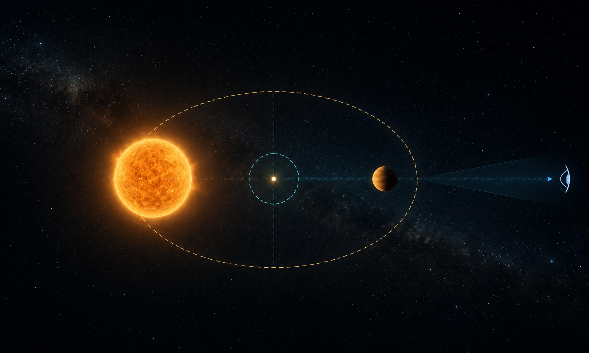
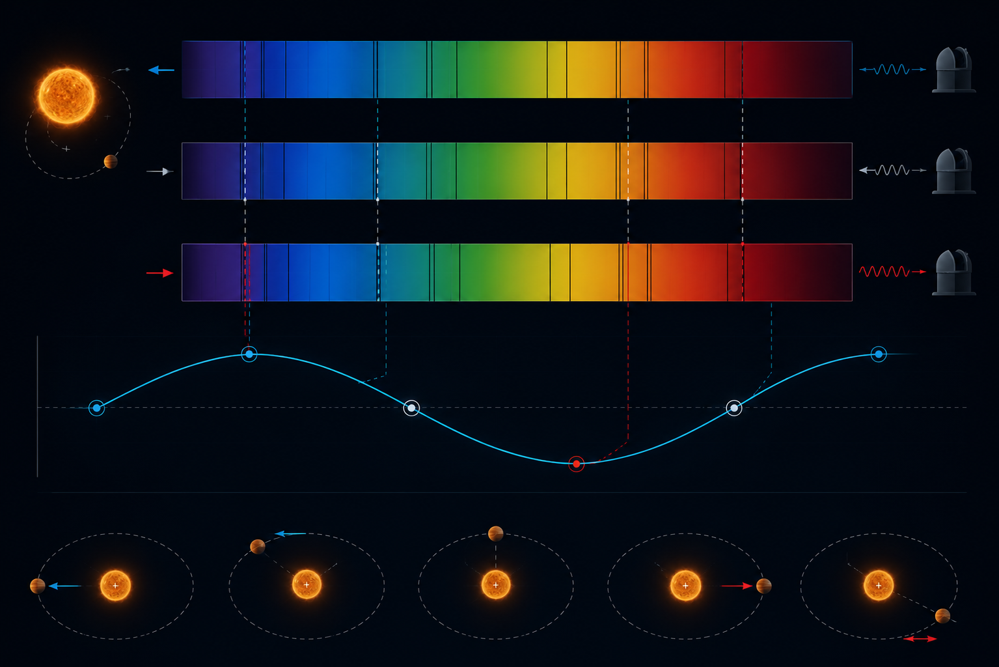
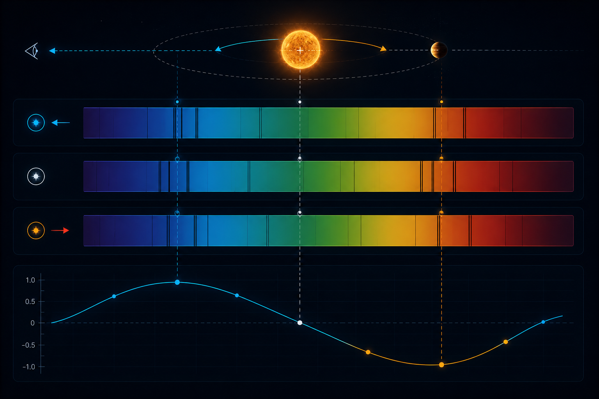

The star is not the boss. It also orbits.
In the simplest classroom version, a planet orbits a star and the star sits still in the middle. That picture is useful for a first sketch, but it is not what gravity actually does. Both the star and planet orbit their common centre of mass, called the barycentre. Because the star is usually much more massive, its orbit is tiny. Tiny, however, is not the same as irrelevant.
If a massive planet pulls its star slightly towards us and then away from us during each orbit, the star’s light carries that motion as a Doppler shift. We do not need to spatially separate the planet from the star. We only need to measure the star well enough, repeatedly enough, and patiently enough.
K is the velocity semi-amplitude, P is the orbital period, and φ is the phase. Real systems add eccentricity, multiple planets, stellar activity, instrumental drift, and the universe being generally inconvenient.
The spectrum moves because the star moves.
When the star moves towards us, its spectral lines shift slightly towards shorter wavelengths. When it moves away, the same lines shift towards longer wavelengths. The shift is extremely small, but modern spectrographs are designed to compare spectra so precisely that a movement of a few metres per second can become measurable.
This is why radial velocity is such a beautiful method. It does not require the planet to block the star. It does not require the planet to be directly imaged. It only requires the planet to pull on its star, which planets are very good at doing because gravity has no sense of privacy.
For exoplanet radial velocities, vr is much smaller than the speed of light c, so this approximation is normally sufficient.
The line of sight decides how much wobble we actually see.
Radial velocity only measures the component of stellar motion towards or away from the observer. This is why inclination matters. If the system is edge-on, the star moves strongly along our line of sight and the velocity signal is large. If the system is face-on, most of the star’s motion is across the sky rather than towards us, so the radial velocity signal becomes small or even nearly invisible.
The method measures Mp sin(i), not the true mass directly. If i is unknown, the planet’s true mass may be larger than the radial-velocity minimum mass.
This is also why combining methods is powerful. If a planet transits, the orbit is close to edge-on, so radial velocity and transit data together can give both radius and mass. From those, density follows, and suddenly the planet becomes more than a periodic signal.
Why radial velocity is still one of the most important exoplanet methods.
The transit method has discovered huge numbers of planets, especially with space missions, but radial velocity gives something transits do not naturally provide: a dynamical mass estimate. That matters because size alone can be misleading. A small planet could be rocky, icy, volatile-rich, or something more complicated. Mass helps tell the physical story.
There is also a practical elegance to it. A star may be unresolved as a point of light, but its spectrum contains a time series of motion. In that sense, radial velocity turns a dot into a dynamical system.
Where the method struggles.
The radial velocity method is powerful, but it is not magic. It is less sensitive to face-on systems because the motion is not along our line of sight. It also becomes difficult for low-mass planets on wide orbits, because the signal is small and the orbital period may be long. If the planet takes twelve years to complete one orbit, the data politely asks for twelve years of patience.
Stars themselves are also a problem. Starspots, plages, oscillations, granulation, and magnetic cycles can create velocity-like signals. Sometimes the star is not revealing a planet; it is just being a hot plasma sphere with surface drama.
The smaller the total radial-velocity uncertainty σRV, the easier it is to detect a planet with semi-amplitude K.
If the geometry is unfavourable, or if stellar activity hides the velocity signal, astronomers may rely on transits, direct imaging, astrometry, microlensing, or combinations of methods. Exoplanet science is not one magic trick; it is a toolbox.
From one wobbling star to an exoplanet population.
Radial velocity was central to the early history of exoplanet discovery, including the detection of giant planets close to their host stars. Those early discoveries were surprising because they did not look like the Solar System. Hot Jupiters were not what many people expected, which is a polite way of saying the universe once again refused to follow our local example.
Today, radial velocity remains crucial because it provides mass measurements and confirms planets found by other techniques. In a good observing programme, the method is not isolated. It works with transit photometry, stellar characterisation, atmospheric follow-up, and careful noise modelling.
The live discovery panel above is intentionally optional. It queries the NASA Exoplanet Archive when the browser permits it, but the scientific explanation does not depend on a live connection. A blog post should not break just because an archive server is having a dramatic afternoon.
The method is simple. The execution is brutal.
The radial velocity method is conceptually elegant: observe a star, measure periodic spectral-line shifts, infer an unseen companion. The reality is a battle against noise, stellar variability, observing cadence, calibration, and instrumental stability. That is what makes it beautiful. The planet is hidden, but gravity still leaves a signature.
Four views of the same wobble.
I have kept the supporting visuals inside the post this time, because the radial-velocity method is much easier to understand when the geometry, spectrum, and comparison with transits are shown side by side. These images are conceptual illustrations, not telescope data, but they help explain what the method is doing physically.



Comments & reactions
Leave a question, correction, or thought. Powered by GitHub Discussions via giscus.